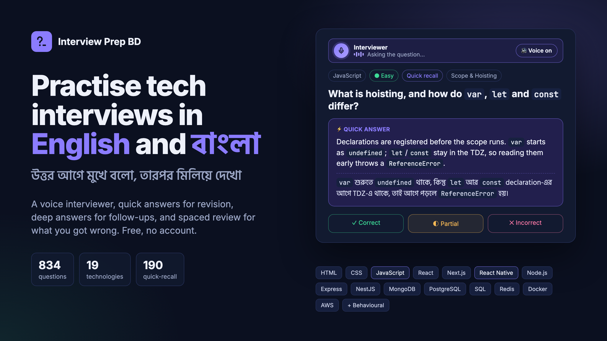
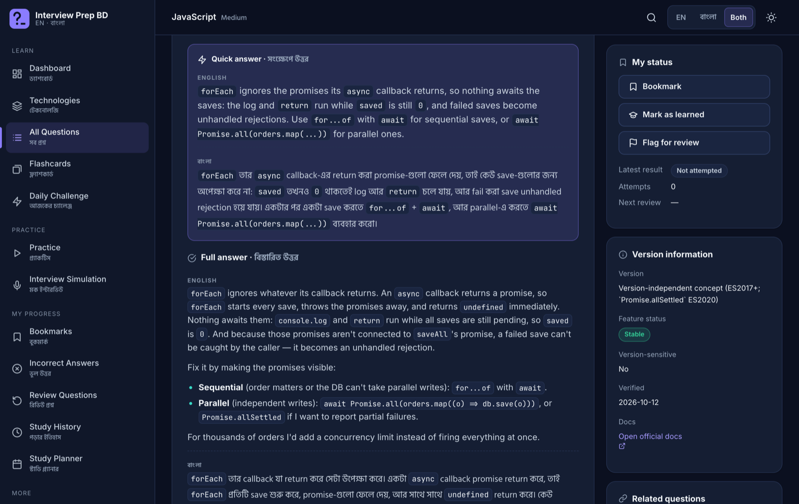
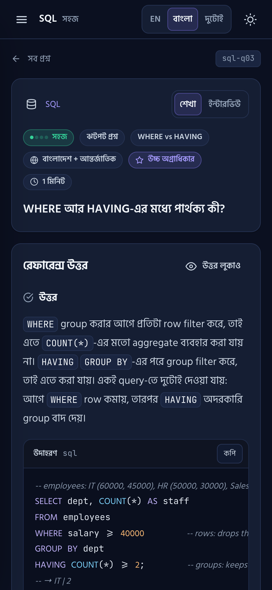
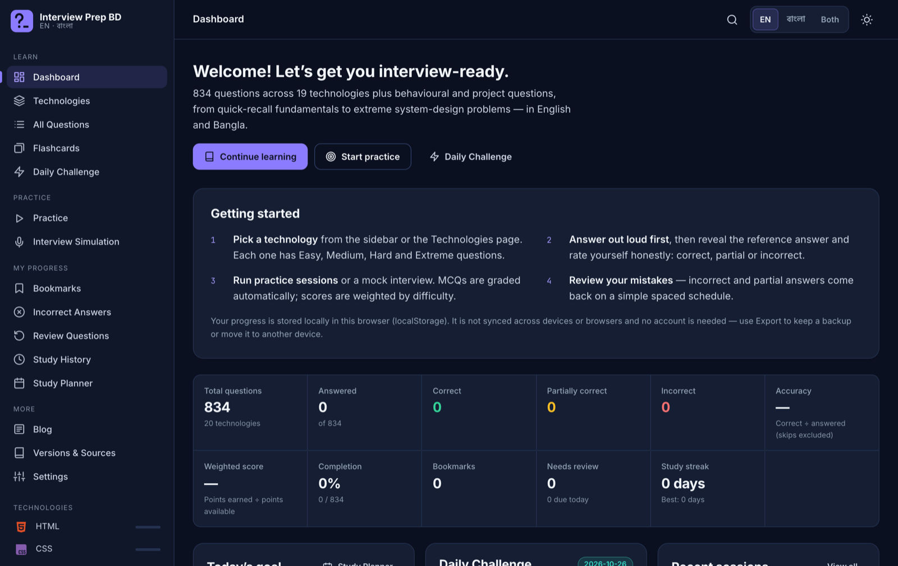
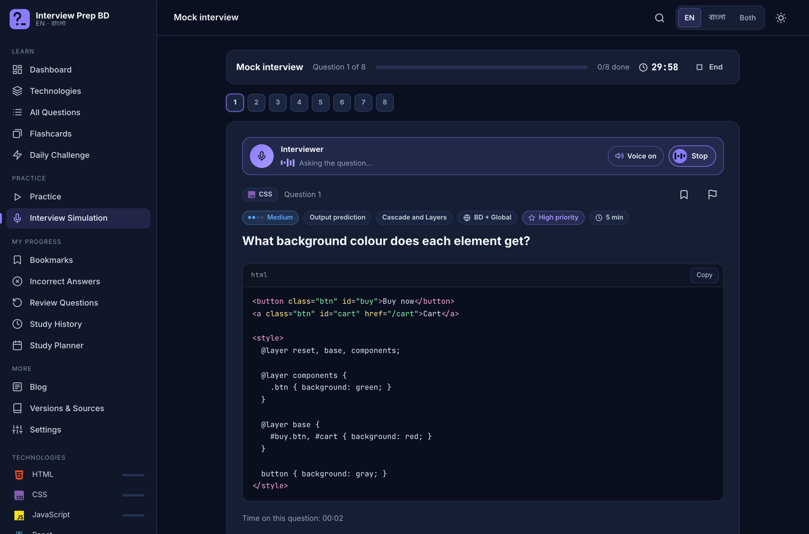
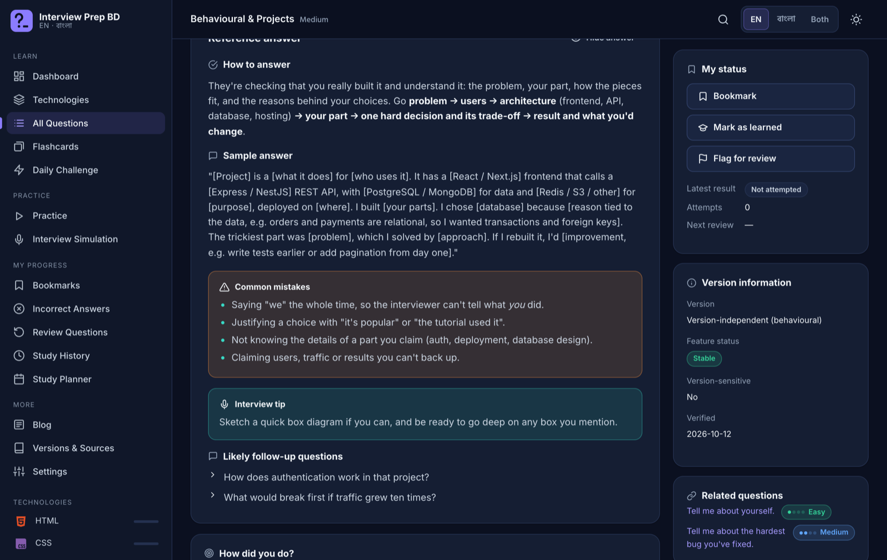
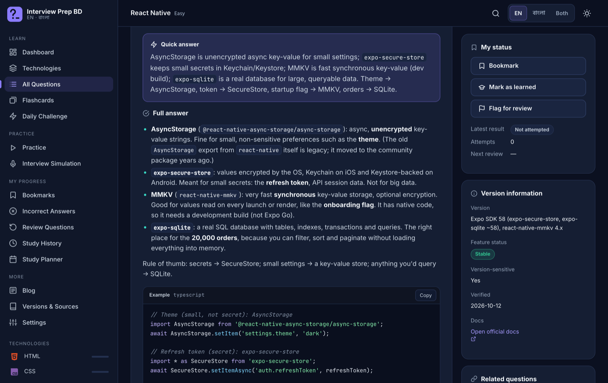
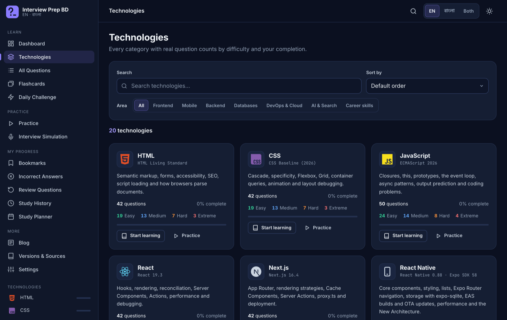

[Image: …] line marks where a picture goes. Click on that line, delete the text, then use Medium's ⊕ → Image button to add the named file from the images folder. Put 01-cover.png first so it becomes the preview image.
A few weeks before an interview, most of us do the same thing. We open a folder of PDFs someone shared in a Facebook group ("Top 50 React Interview Questions", "JS notes"), read the answers, nod, and feel ready.
Then the interviewer asks a follow-up.
"Okay, useEffect runs after render. Why did your effect run twice?"
"You said WHERE filters rows. So why can't you use COUNT(*) in it?"
A one-line answer you memorised doesn't survive that second question. And if you think through technical ideas half in Bangla and half in English, like most developers here do, an English-only explanation is one more thing to translate in your head under pressure.
So I built Interview Prep BD: a free, bilingual practice app that helps you say the answer, not just read it.
👉 Try it: devshojol.github.io/Interview-prep-BD
👉 Source code: github.com/devshojol/Interview-prep-BD
Every question has two layers.
The quick answer is 1–3 plain sentences: the thing you'd say first in an interview. It's perfect for revising the night before.
The full answer below it explains why it works, with code, common mistakes, an interview tip and the follow-up questions an interviewer is likely to ask next. That's the part that gets you through the second and third question.

The quick answer on top, the full answer below, here in English and Bangla side by side.
The Bangla is written the way developers here actually talk. Technical terms stay in English (closure, event loop, index), and the explanation around them is natural Bangla. You can switch between English, বাংলা and Both at any time, on desktop or phone.

A quick-recall SQL question in Bangla on a phone.
Many interviews here start with an MCQ test or a "viva", rapid fundamental questions. For that, each technology has 10 quick-recall questions with short, plain answers and a tiny code example:
var, let and const differ?call vs apply vs bind?WHERE vs HAVING?app.use() vs app.get() in Express?find() vs findOne() vs findById() in Mongoose?There's a dedicated flashcard deck for them too. Shuffle and flip through 190 cards on the bus.
Reading answers feels productive, but it isn't practice. The app is built around one habit: answer out loud first, then check.

The dashboard shows your accuracy, weighted score, streak and what's due for review.
Reading a question on a screen is not the same as hearing it from a person across the table. In the Interview Simulation and the Daily Challenge, an English voice now reads each question aloud ("Question 3…"), then hands over to you: "Your turn: answer out loud."

The interviewer reads the question aloud, then it's your turn to answer out loud.
Anything you get wrong or only half right comes back for review after 1 day, then 3, 7, 14 and 30 days. The app also spots weak topics (for example, React "Effects and Cleanup") so you know what to study next. No more re-reading things you already know.
Technical rounds get the attention, but the first and last questions are often non-technical. The behavioural section tells you what the interviewer is checking, gives you a structure (like STAR), and a sample answer with blanks you fill in with your own story. No fake statistics, no copy-paste scripts.

"Walk me through a project you built": how to answer, a sample answer, common mistakes and likely follow-ups.
As a React Native developer myself, I wanted this section to cover what you actually do at work, not just "what is a component". It includes:
SQLiteProvider, transactions, prepared statements and SQL injection
"Where should each piece of data go?": AsyncStorage vs SecureStore vs MMKV vs SQLite.
Interview answers go stale fast. A 2022 answer about Next.js caching is simply wrong today. The content targets current versions (React 19.3, Next.js 16, Node.js 26 LTS, Express 5, React Native 0.88 with Expo SDK 58), labels legacy APIs as legacy, and links to the official docs for every answer.
Wherever it was possible, the code examples were actually run: JavaScript and Node.js snippets in Node, SQL queries in SQLite. The question bank also went through a full review pass for technical accuracy. There's a Versions & Sources page in the app that lists what each answer is based on.
If you spot a mistake, please open an issue on GitHub. That's the whole point of making it open source.

Pick a technology, or filter by area: frontend, mobile, backend, databases, DevOps & cloud, AI & search, career skills.
If you have an interview coming up, here's how I'd use it:
It's a plain HTML, CSS and JavaScript app with no backend and no login. Your progress stays in your browser, and you can export it as a backup. Want it offline? Download the repo and open index.html; it runs straight from your computer.
I'd love to hear what you think: which topics are missing, which answers helped, and what tripped you up in your last interview. Leave a comment, star the repo, or open an issue.
Good luck with your next interview. শুভকামনা! 🚀